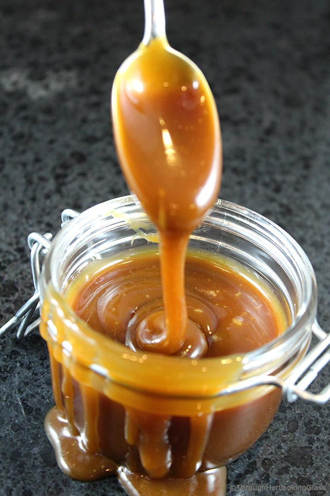

Caramel Sauce

The thick and gooey caramel sauce of your dreams is easier and faster than you think.
Ingredients
- Water
- Sugar
- Salt
- Vanilla pod
- Heavy cream
- Vanilla extract
Steps
- In a 3-quart stainless steel saucier, combine water, sugar, and salt over medium heat. If you like, add an empty vanilla pod, too. Stir with a fork until syrup comes to a boil, about 4 minutes, then simmer without stirring until syrup is honey-colored, roughly 6 minutes, shaking and swirling as needed to ensure even caramelization. Continue cooking until syrup is light to medium amber, a minute more. Immediately add cream and reduce heat to medium-low.
- Stirring constantly with a heat-resistant spatula to knock back the foam, simmer until caramel registers 225°F (107°C) on a digital thermometer, about 3 minutes. Transfer to a heat-resistant container, stir in vanilla extract (if using), and cool to room temperature. (No need to discard the vanilla bean; it will continue to infuse the caramel over time.) Caramel will be runny while warm, but thicken as it cools, turning just a little chewy when cold. Refrigerate up to 1 month in an airtight container.